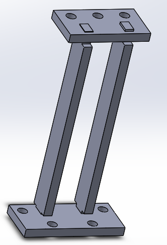
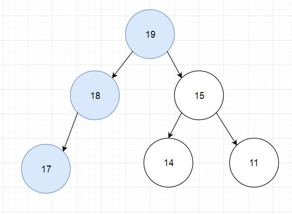
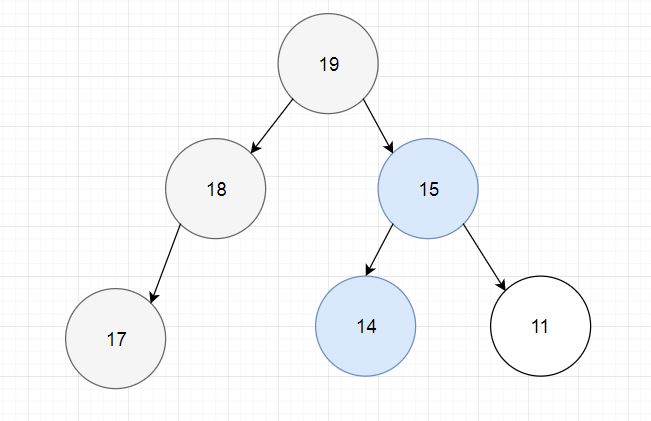

One major problem we keep running into is incorrect wall detection, which is caused by the inconsistency of wall distance sensor value we are reading. The first solution we thought of is averaging. We created a for loop to take five measurements instead of only one and used the average result to compare to the threshold. Initially, we were not aware of the ~20 ms sampling interval of the IR distance sensor and we took five consecutive measurement readings, which were essentially reading the same value. After consulting the IR distance sensor datasheet, we took into account of the sampling interval by putting a 25 ms delay between each reading. Still, the averaging wasn’t working as good as we would like mainly because the outlier value would skew the average a lot and give us incorrect detection. For example , when we shakes the signal wire of the wall sensor to mimic actual robot traversing, the first sample sometimes reads 800 (detect wall) following by 4 samples reading 30 (detect no wall) in a no wall situation. The average result is about 180 and it is greater than our threshold and gives us a false wall detection, even though four out of five times it correctly detects no walls. To address this, we came up with another method to detect wall by minimizing outlier interference. The second solution we thought of is to take six measurements, a wall is detected only if at least four out of six measurements are above the threshold. This way the outlier doesn’t interfere with other sample reads and our wall detection starts to work like a charm. (Though we still need to calibrate the wall sensor threshold slightly based on different lighting conditions.) Another problem that occurred in the last minute was that the IR treasures could interfere with the wall sensors measurement. To address this issue, we ingeniously stacked some washers and nuts under the wall sensors mount and this elevated the sensors to be higher and further away from the treasures. It successfully minimized treasures interference by a great deal.
One lesson we learned about line sensor is its insane sensitivity: a couple mm off the floor would yield drastic difference in sensor value readings, so the closer we keep the line sensor to ground the accurater our result will be. To address this, we designed a new line sensor mount with three different parts that can be laser cut out and glued together. This is over-engineering in hindsight as we didn’t have it cut out and use it. We came up with a way easier solution to keep line sensor closer to ground by stacking washer to the already provided 3D printed out mounts to push it closer to ground. Before this change, our line sensors read white with values in 700 range and black in 1000 range. Since the modification, our line sensors read white with values in 200 range and black in 900 range. The larger gap between white and black detection enables our line sensors to detect black with a lot more accurate and almost free of errors.
After we have thoroughly tested the DFS, we started adding optimizations. The largest optimization is to prevent the last backtrack, where the usual DFS algorithm would return to the root of the tree (the starting node). But we wanted to do this in a method where we don't have to save the already-traversed path. So we used what we call a "root update" condition. Say we have the tree below.
The blue circles represent traversed nodes. We have gone from node 19 to 18 to 17, then back to 18 and 19. We are going to be moving to node 15 next. However, 15 is the last unexplored neighbor of 19. We don't need 19 to be the root of the tree anymore! So when we are moving to the last unexplored neighbor of the root node, then we can update our tree's root.
Similarly, in this tree, we have updated our root to 15, traversed to 15, 14, and back to 15 again. 11 is the last unexplored neighbor of the root (15). So when we go to 11, we update the root to 11. Now that 11 is the root and there are no more neighbors, we know we are done. In essence, this prevents the last backtrack in a usual DFS, where the robot would have to traverse from 11, to 15, to 19, then end.
As the final competition approached, we focused our attention on full completion and mapping of the maze. We had our treasure circuitry set and mounted from Milestone 4, but we did not find as much time to test it as we would have liked. There also appeared to be a treasure shortage in the lab in the days leading up to the competition, which did not help our testing. A diagram of our circuit can be found in the Sparky section of this site.
Our circuit could detect treasures from about 2 inches away, so we mounted our phototransistors so that they reach out on both sides of the robot facing the wall. The issue we ran into with mounting the sensors is that they were prone to snagging on the walls during tight turns. When the sensors would get snagged, the robot would get completely thrown off and forget where it is, run into walls, murder other robots, etc. Therefore, because we decided to play it safe for the final competition, we shortened the reach of the treasure sensors so that there would be no chance of it catching on the walls. Unfortunately, though, this resulted in our robot missing a few treasures during the competition. A point we are proud of for our treasure sensors is that we could detect treasures even if they are not placed at intersections due to the way we are implementing it with interrupts. Even though this did not come in too much use during the final competition, it was still pretty cool.
The radio and FPGA map drawing were working by milestone 4, so please watch the milestone 4 video to see it in action. The robot sends two bytes of data over radio at each intersection, one with the robot's location and orientation, and one with the wall and treasure information at that node. Data is sent even if a node has been visited before, in order to update the location of the robot, but no new wall sensor data is taken at visited nodes (though if a treasure is detected later it will be corrected). The receiving Arduino returns the same data back to the robot. If the robot doesn't receive this handshake, it resends the packet, and only continues once the data has been successfully transmitted. The receiving Arduino connects to the FPGA using SPI, and simply relays the same two bytes it received from the robot. The FPGA only receives data about one node at a time, as opposed to receiving the entire maze each time. It doesn't contain the logic to tell if the maze has been fully explored, this is done through a done signal from the robot itself, and it turns the unused parts of the screen blue instead of black, and starts up the song once it receives the done signal.
The radio on the receiving Arduino has already been using the Arduino SPI library and Arduino SPI pins (Pin 11 MOSI, Pin 12 MISO and Pin 13 CLK) to receive data. We could potentially use these pins to transmit data to the FPGA, but we decided it will be more fun writing our own bitbanging SPI protocol so we can use any pins on the Arduino to transmit data, which we did and shown below.
//Fireworks SPI Bitbanging Transmitting Library
int SPI_cs_pin = 3;
int SPI_data_pin = 4;
int SPI_clock_pin = 5;
//Call setupSPI in void setup(void) to initialize SPI
void setupSPI(void) {
pinMode(SPI_cs_pin, OUTPUT);
pinMode(SPI_data_pin, OUTPUT);
pinMode(SPI_clock_pin, OUTPUT);
digitalWrite(SPI_cs_pin, LOW); //Initialize CS to be LOW
digitalWrite(SPI_clock_pin, LOW); //Initialize Clock to be LOW
}
//Create our SPI function to send 8 bit of data (MSB first)
void sendSPI(byte data) {
//Create rising edge of CS to start sending packages
digitalWrite(SPI_cs_pin, LOW);
digitalWrite(SPI_cs_pin, HIGH);
//Send a byte of data, bit by bit, MSB first
for (int loop = 0; loop < 8; loop++) {
//If bit is high, set data pin high; if bit is low, set data pin low
if ( !!(data & (1 << (7 - loop))) ) digitalWrite(SPI_data_pin, HIGH);
else digitalWrite(SPI_data_pin, LOW);
//Create rising edge of clock to indicate data is ready
digitalWrite(SPI_clock_pin, LOW);
digitalWrite(SPI_clock_pin, HIGH);
}
//Create falling edge of CS to indicate finish sending packages
digitalWrite(SPI_cs_pin, LOW);
digitalWrite(SPI_clock_pin, LOW);
//Delay 500ms
delay(500);
}
Sensor threshold value often requires calibration depending on the environment and servo motor’s stopping signal can sometimes change from 90 to 91 to 92 with frequent use. For ease of sensor calibration and debugging, we created three diagnostics code to perform individual unit testing for line sensor, wall sensor and servo motor.
//CodeLine Sensor Diagnostics/Caliberation Code
//Fireworks Line Sensor Diagnostics/Caliberation Code
int lineMidLeft, lineMidRight, lineRight, lineLeft; //Line Sensor Values Variables
int lineMidLeftPin, lineMidRightPin, lineRightPin, lineLeftPin; // Analog pins with line sensors
int blackDetect = 600; // Threshold above which sensors are reading a black line
void printSensors() {
lineLeft = analogRead(lineLeftPin);
lineMidLeft = analogRead(lineMidLeftPin);
lineMidRight = analogRead(lineMidRightPin);
lineRight = analogRead(lineRightPin);
Serial.print(lineLeft);
Serial.print(" ");
Serial.print(lineMidLeft);
Serial.print(" ");
Serial.print(lineMidRight);
Serial.print(" ");
Serial.print(lineRight);
Serial.print(" ");
Serial.println();
}
void setup() {
Serial.begin(9600);
lineLeftPin = A0;
lineMidLeftPin = A1;
lineMidRightPin = A2;
lineRightPin = A3;
}
void loop() {
printSensors();
}
Wall Distance Sensor Diagnostics Code
//Fireworks Wall Distance Sensor Diagnostics/Caliberation
int mux_S0 = 7, mux_S1 = 8;
int distanceInput;
int isThereAWall(int);
void setup() {
Serial.begin(9600);
pinMode(mux_S0, OUTPUT);
pinMode(mux_S1, OUTPUT);
distanceInput = A4;
}
void loop() {
if (isThereAWall(0) == 1) Serial.println("Leftwall detected");
if (isThereAWall(1) == 1) Serial.println("Front wall detected");
if (isThereAWall(2) == 1) Serial.println("Right wall detected");
Serial.println();
delay(2000);
}
int isThereAWall (int sensor) {
int wallDetectCounter = 0;
int temp = 0;
if (sensor == 0) { //Y0 - left wall; S0 = 0, S1 = 0
digitalWrite(mux_S0, LOW); digitalWrite(mux_S1, LOW);
for (int i = 0; i < 6; i++) {
temp = temp + analogRead(distanceInput); //Calculate average value
//Increase wall detect counter by 1 if greater than threshold
if (analogRead(distanceInput) > 270) wallDetectCounter++;
delay(25); //Wait for next IR sample
}
Serial.print("Left wall avg value:");
}
else if (sensor == 1) { //Y1 - front wall; S0 = 1, S1 = 0
digitalWrite(mux_S0, HIGH); digitalWrite(mux_S1, LOW);
for (int i = 0; i < 6; i++) {
temp = temp + analogRead(distanceInput);
if (analogRead(distanceInput) > 100) wallDetectCounter++;
delay(25);
}
Serial.print("Front wall avg value:");
}
else if (sensor == 2) { //Y2 - right wall; S0 = 0, S1 = 1
digitalWrite(mux_S0, LOW); digitalWrite(mux_S1, HIGH);
for (int i = 0; i < 6; i++) {
temp = temp + analogRead(distanceInput);
if (analogRead(distanceInput) > 270) wallDetectCounter++;
delay(25);
}
Serial.print("Right wall avg value:");
}
temp = temp / 5; Serial.println(temp); //Print average value
Serial.print("Number of Wall Count:"); //Print # of wall count
Serial.println(wallDetectCounter);
//If at least 4 out of 6 wall detected, return 1 - wall detected
if (wallDetectCounter >= 4) return 1;
else return 0;
}
Servo Motor Diagnostics/Caliberation Code
//Fireworks Servo Motor Diagnostics/Caliberation Code
#include <Servo.h>
Servo leftWheel, rightWheel;
int leftWheelPin = 5;
int rightWheelPin = 6;
void setup() {
leftWheel.attach(leftWheelPin);
rightWheel.attach(rightWheelPin);
leftWheel.write(91);
rightWheel.write(90);
}